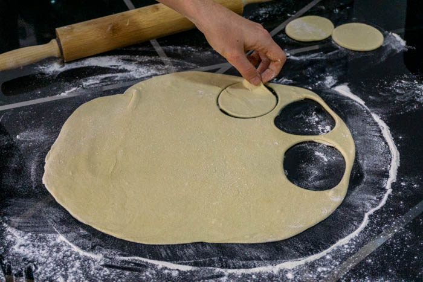
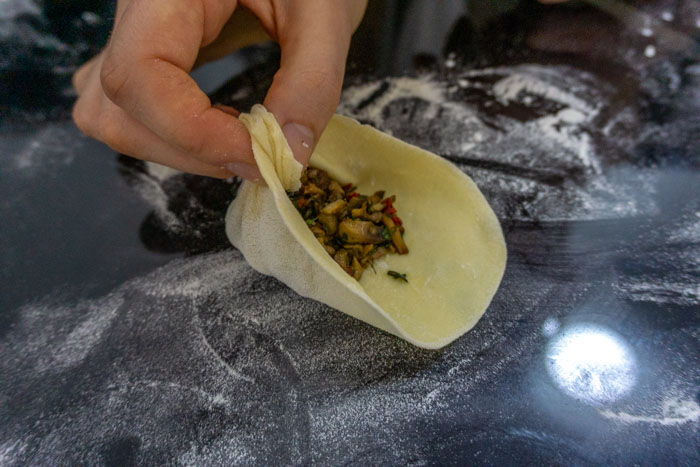
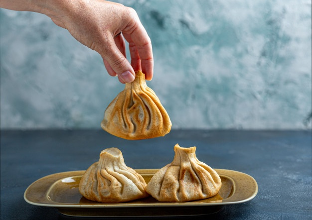

------------------------------------Delicious homemade khinkali------------------------------------
Making Georgian dumplings looks quite a lot harder than it actually is and you’re not going to need any special equipment or skills to make it. Just have some confidence (and maybe a glass or two for Georgian wine!) and have a fun evening of khinkali-making!
The most traditional khinkali recipe — the one with the ground beef and pork filling. In a large bowl, combine 300 grams of ground beef and 200 grams of ground pork (if you don’t eat pork, feel free to use ground veal in this — the flavour will be similar. Alternatively, you can make the Svaneti version and use ground lamb in your khinkali).
Add salt and pepper to season. Stir in half a teaspoon of caraway seeds along with the same measurements of minced garlic, ground coriander, chilli, kondari (or thyme), and fresh cilantro (coriander) as mentioned in the mushroom filling recipe above.
Now comes the fun part — actually forming your khinkali! This may look like the most daunting step in this khinkali recipe, but I assure you that it looks harder than it actually is.
First off, you need to roll out your dough. On a lightly floured surface, take your dough and roll it until it’s about 3 mm thick. Using a drinking glass or circle cutter that’s about 8 centimetres in diameter, cut as many rounds as you can from the dough. This recipe makes about 20 khinkali — so try to get 20 rounds from your dough. It can be gathered and re-rolled if you don’t get quite enough from your initial roll.
Once your rounds are cut, go back over them with the rolling pin and roll them out until they reach about 10-12 centimetres in diameter and the dough is about 1-2 mm thick — you don’t want it too thin as it will increase your risk of the dough breaking and you filling bursting out during cooking. This is also the reason you knead the dough for as long as you do — it creates gluten which allows you to stretch the dough significantly without it breaking.
Once your dough is adequately rolled out, it’s time to fill your dumplings.
Working one by one, take about a tablespoon of filling and place it in the centre of the round. Using both hands, pick up one side of the dough, holding it about 2 centimetres apart in between your thumb and forefinger. Take the dough in your left hand and fold it over and add it to the dough in your right hand, pinching to seal, creating one fold in your khinkali. Continue this motion until you’ve folded and pinched the entire round of dough. Twist the top of the khinkali to seal it completely. Repeat on remaining dumplings.
Once your khinkali are formed, it’s time to cook them! This is as easy as dropping them into some boiling water and waiting for a bit.
Bring about 2 litres of salted water to boil in a large pot. Using a spider or slotted spoon, lower your khinkali into the boiling water. If you’re following the mushroom khinkali recipe, cook for about 6-8 minutes or until the dough is cooked and the mushroom filling is sufficiently heated through.If using the traditional meal filling, cook the dumplings for a total of about 10-12 minutes, until everything is completely cooked through and a brothy soup has formed within.
Remove from the water using a spider or slotted spoon. Serve immediately with freshly ground black pepper.
